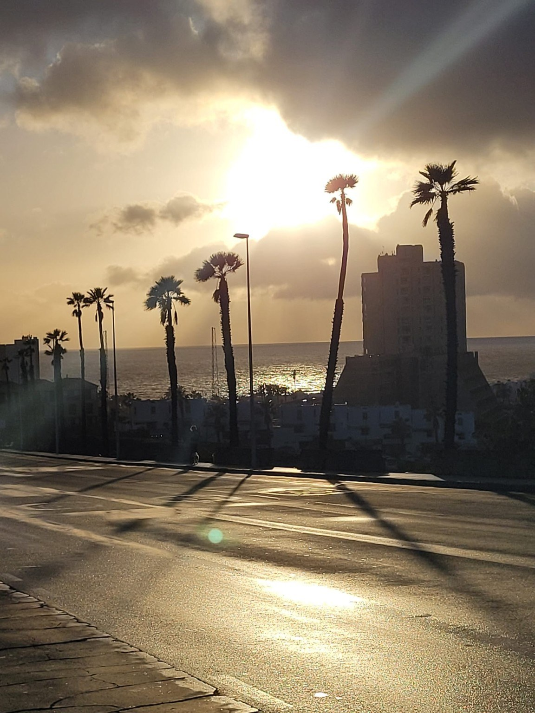

At the end of the street lies the Atlantic.
The palm trees rise into the light, the buildings preserve the order of a European town, and the sky comes from Africa — warm, intense, and impossible to ignore.
In Tenerife, the two worlds do not meet at a border. They blend naturally, in a sunset.
The photograph does not show only a place. It shows a balance.
The street leads the eye toward the ocean. The palms connect earth and sky. The buildings remain in shadow, and the light does the rest.
Nothing more is needed.
Perhaps this is the spirit of the island: it does not ask you to choose between worlds.
It offers you the warmth of Africa, the rhythm of the West, and the Atlantic between them.
All in the same light.
This is where Tenerife Guide begins: with a street, an ocean, and a light that holds two worlds together.
Travel slower. Discover deeper.